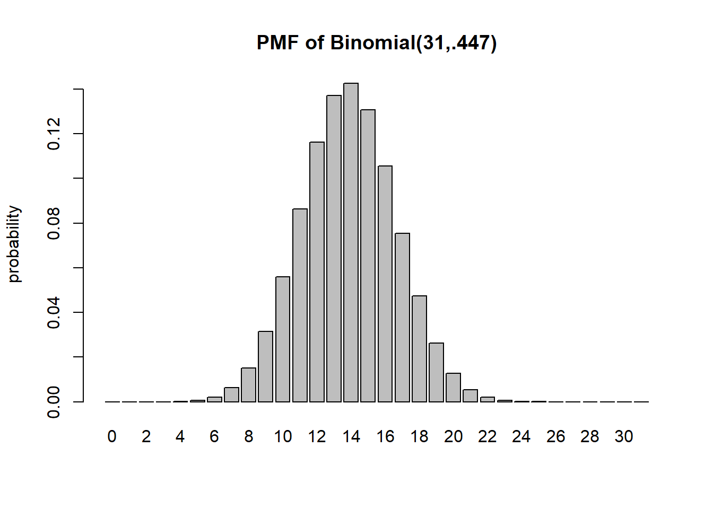
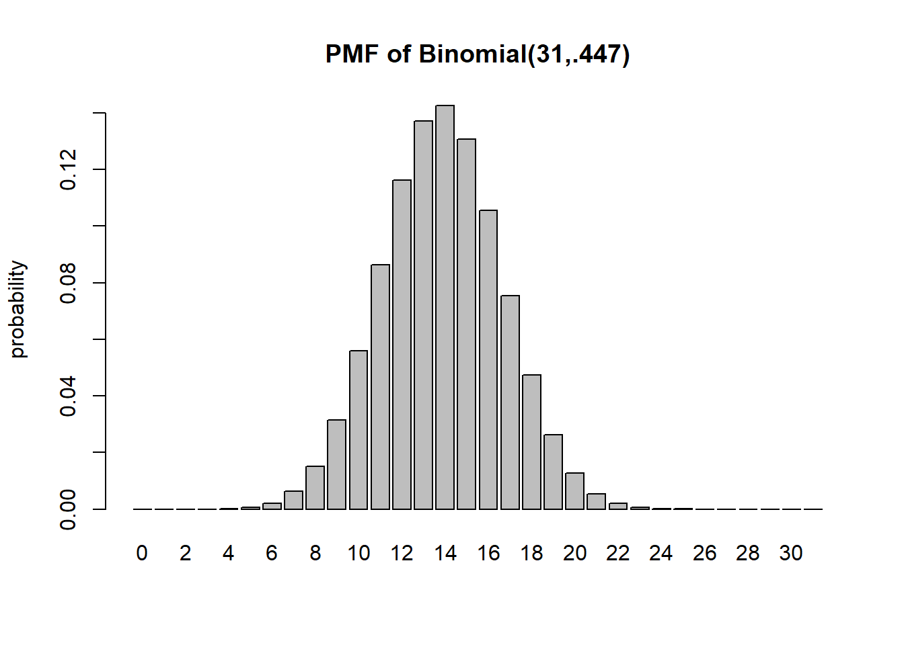
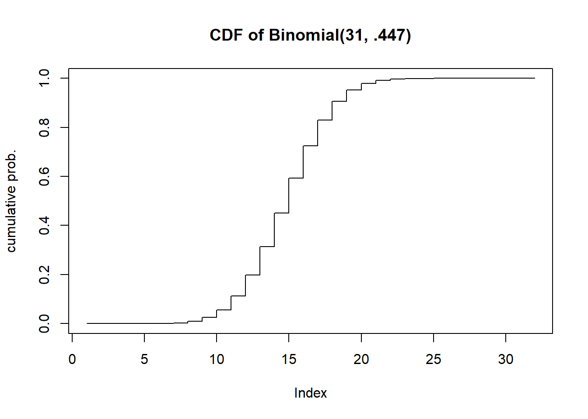
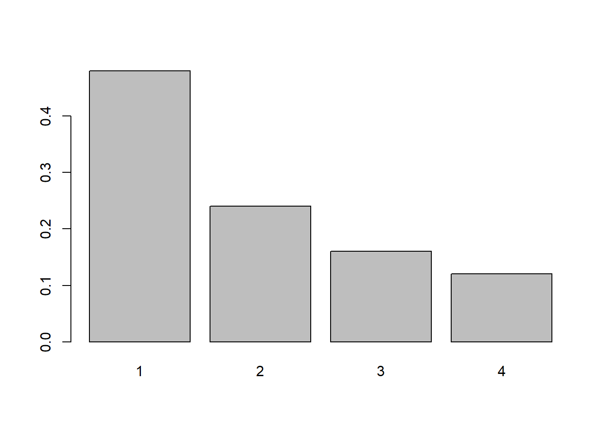
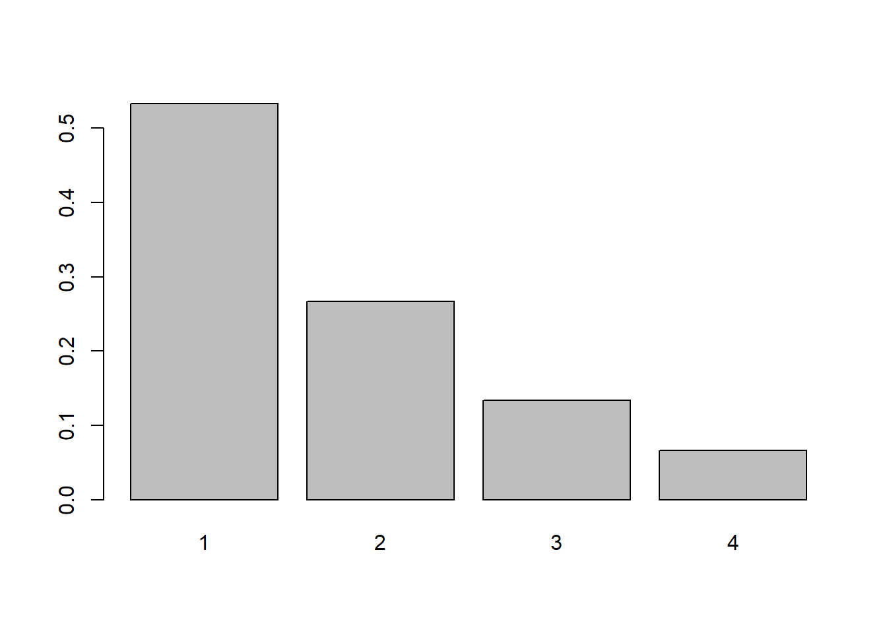
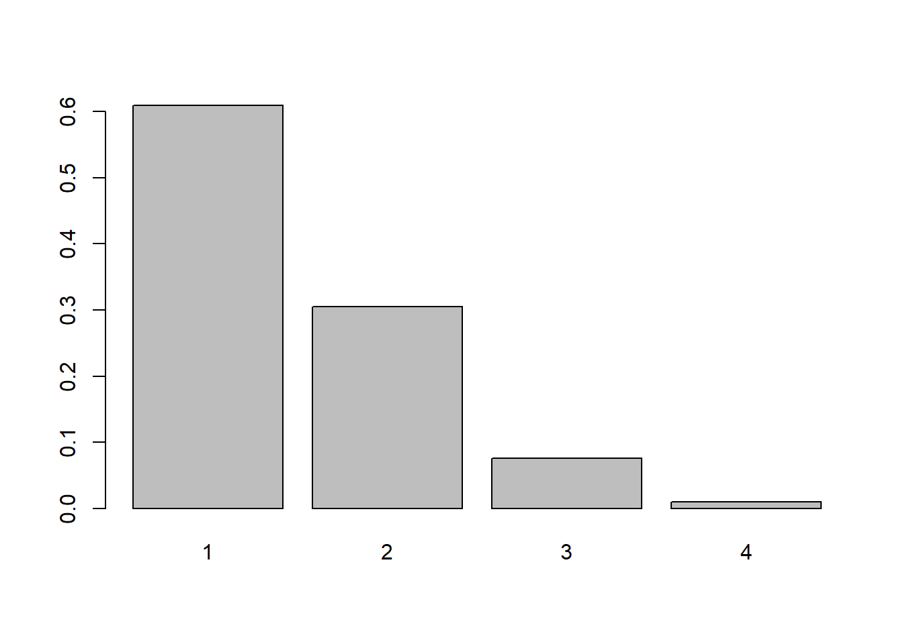
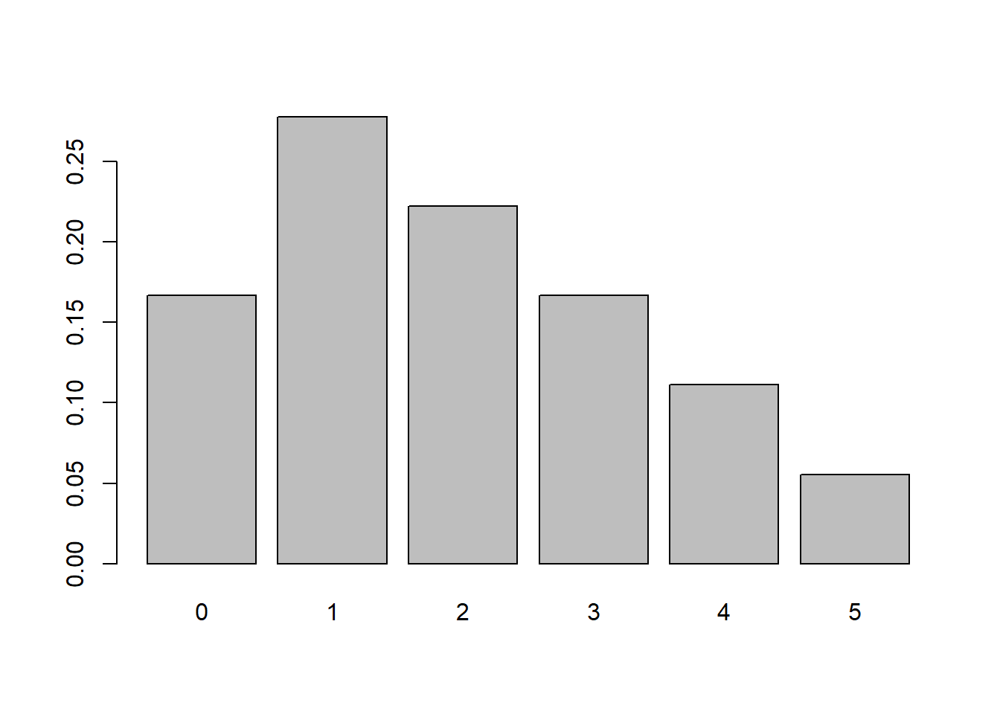
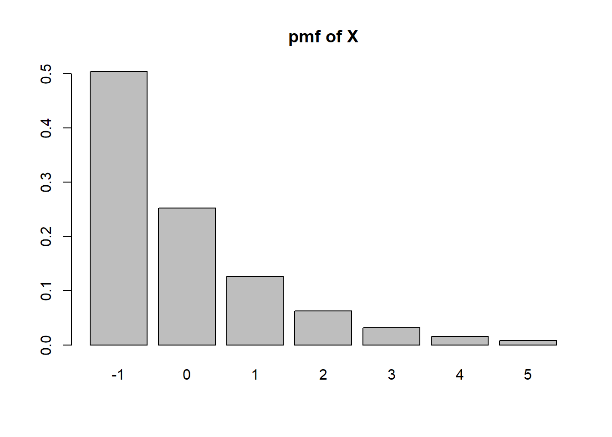
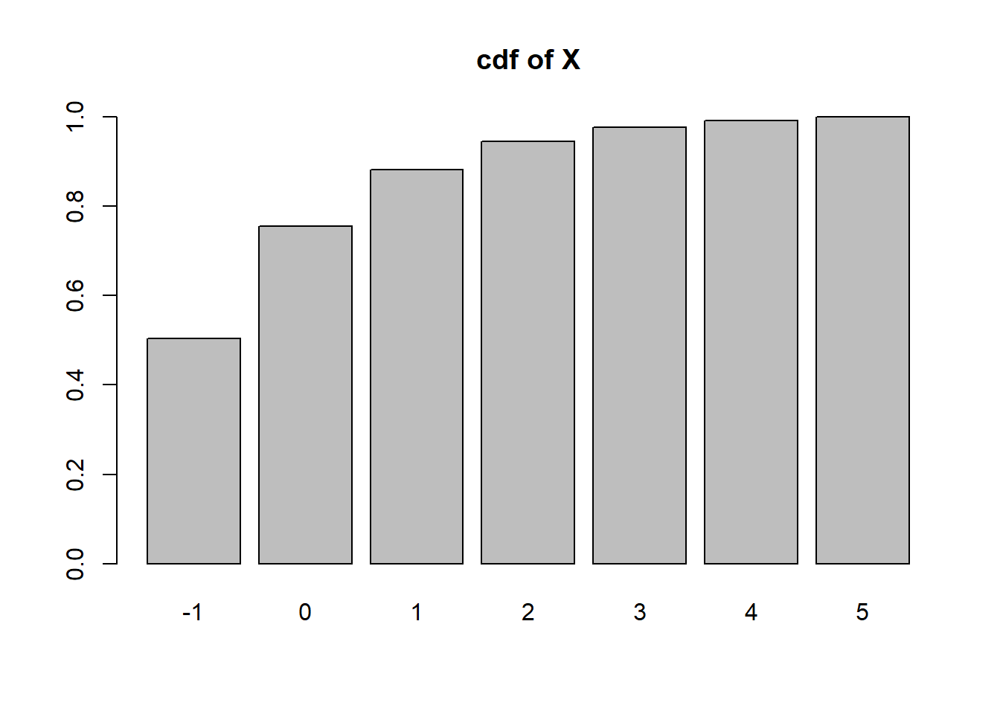
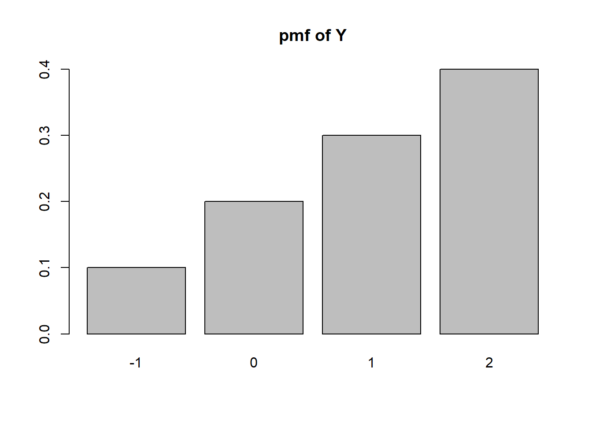

barplot(dbinom(0:31, 31,.447), names=0:31, ylab="probability", main="PMF of Binomial(31,.447)")
A recent national study showed that approximately 44.7% of college students have used Wikipedia as a source in at least one of their term papers. Let \(X\) equal the number of students in a random sample of size \(n = 31\) who have used Wikipedia as a source.
Assuming independence in sampling, and a representative sample, we can use a Binomial distribution with \(n=31\) and \(p=0.447\).
barplot(dbinom(0:31, 31,.447), names=0:31, ylab="probability", main="PMF of Binomial(31,.447)")
plot(pbinom(0:31, 31, .447), type="s", ylab="cumulative prob.", main="CDF of Binomial(31, .447)")
dbinom(17, 31, .447)[1] 0.07532248pbinom(13, 31, .447)[1] 0.451357sum(dbinom(12:31, 31, .447))[1] 0.8020339#or
pbinom(11, 31, .447, lower.tail=FALSE)[1] 0.8020339#or
1-pbinom(11, 31, .447)[1] 0.8020339#P(X at least 15)
sum(dbinom(15:31,31,.447))[1] 0.406024sum(dbinom(16:19, 31, .447))[1] 0.2544758#E(X)=n*p
31*.447[1] 13.857#or you can also do this (but it's too much work)
sum( (0:31) * dbinom(0:31, 31, .447))[1] 13.857#Var(X) = n * p * (1-p)
31 * .447 * (1-.447)[1] 7.662921#or - if you want (but why would you want to?)
sum((0:31 - 31*.447)^2 * dbinom(0:31, 31, .447))[1] 7.662921#SD(X) = sqrt(n*p*(1-p))
sqrt(31*.447*(1-.447))[1] 2.768198#E(4X+51.324) = 4*E(X)+51.324
4*(31*.447) + 51.324[1] 106.752The number of missed shots before the first basket, assuming independence, can be modeled by a Geometric random variable with parameter \(p=.37\).
Assuming that all 3 digit numbers are equally likely (A reasonable assumption) the number selected can be modeled by a discrete uniform distribution with minimum 100 and maximum 999.
If we drop the cup 20 times, and the result each time is independent with a constant probability of landing right side up, the number of times it does can be modeled by a Binomial random variable with parameters \(n=20\) and \(p\) (unknown).
Geometric random variable (unknown parameter value for \(p\)).
Technically we should use a hypergeometric random variable for this situation (since it is a small population size of 557), but since we do not cover the hypergeometric the closest random variable we have is the binomial.
This is a discrete random variable, but without other information it’s hard to say. The distribution is likely unimodal and bell-curved. You could probably model this using a normal distribution rounded off to the nearest integer.
The observation window is the circular area, and the 10 minutes during observation. Assuming the rate of rainfall is constant, the number of raindrops in the circle can be modeled using a Poisson random variable.
Counting indicates a discrete random variable. A binomial or a rounded normal distribution may be appropriate, but we lack enough details to be sure.
The location of the sprouting grass could be modeled well by a Poisson random variable - the \(\lambda\) parameter would likely be very large, in the range of 1000 or 10000, and as such the distribution would look very much like a normal distribution.
As we define a geometric random variable, we let \(X\) be the number of failures before the first success. The last pat (that causes the burp) is the success in this context. So we could use a geometric random variable, but we would have to add 1 to it in order to count all burps (the failures + 1 success).
move to chapter on covariance
Show that \(\mathbb{E}(X-\mu)^2 = \mathbb{E}X^2-\mu^2\). Hint: expand the quantity \((X-\mu)^2\) and distribute the expectation over the resulting terms.
The proof goes like this: We first FOIL \((X-\mu)^2\):
\(\mathbb{E}(X-\mu)^2 = \mathbb{E}(X^2 - 2\mu X + \mu^2)\)
We next split the expected value into 3 expected values using the fact that \(\mathbb{E}\) is a linear operator.
\(\mathbb{E}(X-\mu)^2 = \mathbb{E}X^2 -2\mu \mathbb{E}X + \mathbb{E}\mu^2\)
We next observe that \(\mu^2\) is constant and \(\mathbb{X}=\mu\)
\(\mathbb{E}(X-\mu)^2 = \mathbb{E}X^2 -2\mu \mu + \mu^2\)
We can simplify the expression and we’re done!
extra If \(X \sim \text{Binom}(n,p)\) show that \(\mathbb{E}X(X-1)=n(n-1)p^2\).
We can just expand the product \(\mathbb{E}(X^2-X)\) and we can split this up into two expected values: \(\mathbb{E}X^2 - \mathbb{E}X = \mathbb{E}X^2-\mu\). Recall that \(Var(X)=\mathbb{E}X^2-\mu^2\) So \(\mathbb{E}X^2=Var(X)+\mu^2\). For a binomial, \(Var(X)=np(1-p)\) and \(\mu=np\). Thus we have
\(\mathbb{E}X^2 - \mu=[np(1-p) + n^2p^2] - np = np\left(1-p+np-1\right)\)
Tidying up a little bit we get \(np(np-p)=np^2(n-1)\), and we’re done.
Consider an information source that produces numbers \(k\) in the set \(S_X=\{1,2,3,4\}\). Find and plot the pmf in the following cases:
Use the fact that \(p_1+p_2+p_3+p_4=1\). In other words, \(p_1/1+p_1/2+p_1/3+p_1/4=p_1(12/12+6/12+4/12+3/12) = p_1(25/12) =1\), so \(p_1=12/25\). Then \(p_2=6/25\), \(p_3=4/25\) and \(p_4=3/25\).
barplot(height=c(12/25, 6/25, 4/25, 3/25), names=1:4)
Starting with \(k=1\) we have \(p_2 = p_1/2\). Following this pattern, \(p_3=p_1/4\) and \(p_4=p_1/8\). If we add these together we have \(p_1(8/8 + 4/8 + 2/8 + 1/8) = 15/8\). Thus we have \(p_1=8/15, p_2=4/15, p_3=2/15\) and \(p_4=1/15\)
barplot(height=c(8/15, 4/15, 2/15, 1/15), names=1:4)
Starting with \(k=1\) we have \(p_2 = p_1/2\), \(p_3=p_2/2^2= p_2/4 = (p_1/2)/4 = p_1/8\). \(p_4 = p_3/2^3 = p_3/8 = (p_1/8)/8) = p_1/64\). The sum is \(p_1(64/64 + 32/64 + 8/64 + 1/64) = p_1(105/64)\) so \(p_1 = 64/105, p_2=32/105, p_3=8/105, p_4=1/105\)
barplot(height=c(64/105, 32/105, 8/105, 1/105), names=1:4)
Consider the pmf for part a. The sum of the probabilities would be \(\sum_{k=1}^\infty p_1/k\). However \(\sum_{k=1}^\infty \frac{1}{k}\) does not converge, so no matter what \(p_1\) is, the sum of probabilities will exceed 1.
For part b, the sum of the probabilities is \(\sum_{k=1}^\infty 2p_1/{2^{k}}\). Because \(\sum_{k=1}^\infty \frac{1}{2^k}=1\), then it would be possible to define a random variable with support \(1,2,\ldots\) with this pmf.
For part c, because \(p_k/2^k \leq p_k/2\), we at least know that \(\sum_k p_k\) is finite, so such a random variable with infinite support is certainly feasible. The exact value of \(p_1\) is not as simple to calculate, but we were not asked to do that.
Two dice are tossed. Let \(X\) be the absolute difference in the number of dots facing up.
#It may be simplest to calculate all possible values of X.
x <- vector("numeric")
for(i in 1:6){
for(j in 1:6){
x[length(x)+1] = abs(i-j)
}
}
#now that we have all equally likely values, we can just calculate the pmf in a prop.table
pX <- prop.table(table(x))
#And create a barplot.
barplot(pX)
#The probability that X <= 2 is easy to find using the pmf
#The columns are named with strings, so we can convert 0 1 and 2 to strings to pull out the proper probabilities.
sum(pX[as.character(0:2)])[1] 0.6666667#The expected value and variance can be calculated from the pmf.
(EX <- sum(0:5 * pX))[1] 1.944444(VarX <- sum((0:5 - EX)^2 * pX))[1] 2.052469#or by taking the mean and population variance of the x values themselves
mean(x)[1] 1.944444mean((x-mean(x))^2)[1] 2.052469##7. PMF Formula extra, move to next chapter
Let \(X\) be a random variable with pmf \(p_k = c/2^k\) for \(k=1,2,\ldots\).
This was done above; because \(\sum_{i=1}^\infty 1/2^k = 1\), the value of \(c\) must be \(1\).
\(P(X>4) = 1-P(X \leq 3)=1-(\frac12 + \frac14 + \frac18)\)
1-(1/2+1/4+1/8)[1] 0.125The expected value can be calculated by taking the sum \(\sum k p_k = \sum_{k=1}^\infty \frac{k}{2^k}\) which we can show using facts from calculus equals 2. Why? Well, as long as \(|p|<1, \sum_{k=1}^{\infty}p^k=\frac{p}{1-p}\) (this is a geometric series). If we take a derivative of both sides we get \(\sum_{k=1}^\infty kp^{k-1}=\frac{1}{(1-p)^2}\). Multiply both sides by \(p\) to get \(\sum_{k=1}^\infty kp^{k}=\frac{p}{(1-p)^2}\). In our case, \(p=\frac12\). Plugging this in we get \(\frac{.5}{.5^2}=2\).
The variance is \(E(X^2)-(EX)^2=E(X^2)-4\). The expected value of \(X^2\) can be derived, though it’s not so fun…
Start by taking the equation \(\sum_k kp^k = \frac{p}{(1-p)^2}\) and take a derivative again. We get \(\sum_k k^2 p^{k-1} = \frac{(1-p)^2+2p(1-p)}{(1-p)^4}\). Multiply through by \(p\) to get \(\sum_k k^2 p^k = \frac{p(1-p)^2+2p^2(1-p)}{(1-p)^4}\). If we let \(p=\frac12\) we have found \(E(X^2)=\sum_{k=1}^\infty k^2(\frac12)^k=\dfrac{\frac18-\frac{2}{8}}{\frac{1}{16}}=6\). Thus \(Var(X)=E(X^2)-E(X)^2 = 6-4=2\). It should be noted that this random variable is actually a geometric random variable (well, according to the “number of trials until and including the first success definition). If we define \(Y\sim Geom(.5)\) using our definition of “number of failures before the first success” then We can let \(X=Y+1\). \(E(X)=E(Y+1)=\frac{1-.5}{.5}+1=2\) and \(Var(X)=Var(Y)=\frac{1-p}{p2}=\frac{.5}{.25^2}=2\).
extra
Let \(X\) be a random variable with pmf \(p_k = c/2^k\) for \(k=-1,0,1,2,3,4,5\).
The sum of the probabilities are \(c(2 + 1 + \frac{1}{2}+\frac{1}{4}+\frac{1}8+\frac{1}{16}+\frac{1}{32})=c\frac{127}{32}\) so \(c=\frac{32}{127}\).
c=32/127
k = seq(-1,5)
pk=c/2^k
names(pk) <- k
sum(pk[as.character(2)])[1] 0.06299213sum(pk[as.character(2:5)])[1] 0.1181102If \(X^3 < 5\) that means \(X^3 \leq 4\) and thus \(X \leq 4^{1/3}\approx 1.587\)
sum(pk[k<=4^(1/3)])[1] 0.8818898sum(pk[k^3<5])[1] 0.8818898barplot(height=pk, names=k, main='pmf of X')
barplot(height=cumsum(pk), names=k, main='cdf of X')
A modem transmits a +2 voltage signal into a channel. The channel adds to this signal a noise term that is drawn from the set \(\{0,-1,-2,-3\}\) with respective probabilities \(\{4/10, 3/10, 2/10, 1/10\}\).
#Let X be the noise
k <- seq(0,-3)
pk <- c(4/10, 3/10, 2/10, 1/10)
y <- sort(2+k)
py <- pk[order(2+k)]
barplot(height=py, names=y, main="pmf of Y")
This happens when there’s no noise, with probability 4/10.
#Interpreting 'positive' to be strictly positive, not zero:
sum(py[y>0])[1] 0.7(EY <- sum(y*py))[1] 1(VarY <- sum((y-EY)^2*py))[1] 1On a given day, your golf score takes values from the numbers 1 through 10 with equal probability of getting each one. Assume that you play golf for three days, and assume that your three performances are independent. Let \(X_1, X_2\) and \(X_3\) be the scores that you get, and let \(X\) be the minimum of these three scores.
\(P(X > k-1) = P(X \geq k) =P(X = k)+P(X > k)\), thus \(P(X=k)=P(X>k-1)-P(X>k)\).
\(P(X_1>k)=\frac{10-k}{10}\)
\(P(X > k) = P(X_1,X_2,X_3 > k) = P(X_1 > k)P(X_2>k)P(X_3>k)\)
This means \(P(X>k) =\frac{(10-k)^3}{10^3}\), and \(P(X>k-1)=\frac{(11-k)^3}{10^3}\). From the previous result, \(P(X=k)=P(X>k-1)-P(X>k)=\frac{(11-k)^3-(10-k)^3}{10^3}\)
This is asking to take the difference of the two expected values. It’s obvious that \(E(X_1)=5.5\); We need to find the expected value of \(X\).
x <- 1:10
px <- ((11-x)^3-(10-x)^3)/10^3
#double check
sum(px)[1] 1(EX <- sum(x*px))[1] 3.0255.5-EX[1] 2.475The average (expected) point improvement when going from a 1 day point to a minimum of 3 days is 2.475.
Let \(g(X) = \begin{cases}1 & \text{if }X>10\\0 & \text{otherwise}\end{cases}\) and \(h(X) = \begin{cases}X-10 & \text{if }X-10>0\\0 & \text{otherwise}\end{cases}\)
k <- 1:15
p1 <- 1/(sum(1/k))
pk <- p1/k
g <- function(x){
return(as.numeric(x>10))
}
sum(g(k)*pk)[1] 0.1173098h <- function(x){
return(max(0, x-10))
}
p1 <- 1/(sum(1/2^(k-1)))
pk <- p1*(1/2^(k-1))
sum(h(k)*pk)[1] 5A voltage \(X\) is uniformly distributed on the set \(\{-3,\ldots,3,4\}\).
x <- -3:4
px <- 1/length(x)
(EX <- sum(x*px))[1] 0.5(VarX <- sum((x-EX)^2*px))[1] 5.25y <- -2*x^2+3
(EY <- sum(y*px))[1] -8(VarY <- sum((y-EY)^2*px))[1] 105w <- cos(pi*x/8)
(EW <- sum(w*px))[1] 0.6284174(VarW <- sum((w-EW)^2*px))[1] 0.1050915z <- w^2
(EZ <- sum(z*px))[1] 0.5(VarZ <- sum((z-EZ)^2*px))[1] 0.125This can be handled mathematically. The formula for \(E(1/(X+1))\) is
\(E(1/(X+1))=\sum_{x=0}^{\infty}\frac{1}{x+1}\frac{\lambda^{x}}{x!}e^{-\lambda}=\sum_{x=0}^{\infty}\frac{\lambda^{x}}{(x+1)!}e^{-\lambda}\)
The trick is to get get the summation to equal 1 and simplify. We multiply by \(\lambda/\lambda\)
\(E(1/(X+1))=\frac{1}{\lambda}\sum_{x=0}^{\infty}\frac{\lambda^{x+1}}{(x+1)!}e^{-\lambda}\)
Now we can make a change of variables: \(y=x+1\) and thus \(x=0\) becomes \(y=1\)
\(E(1/(X+1)) = \frac{1}{\lambda}\sum_{y=1}^{\infty}\frac{\lambda^{y}}{y!}e^{-\lambda}\)
The only thing missing is that the summation starts at \(y=1\) instead of \(y=0\), But for \(Y \sim Poisson(\lambda)\), \(P(Y=0)=e^{-\lambda}\) so this summation is \(1-e^{-\lambda}\).
\(E(1/(X+1)) = \frac{1}{\lambda}(1-e^{-\lambda})\)
\((X+Y)^3 = X^3+3X^2Y+3XY^2+Y^3\) so \(E[(X+Y)^3]=E(X^3)+3E(X^2)E(Y)+3E(X)E(Y^2)+E(Y^2)\)
this is due to independence. Since \(X\) an \(Y\) are independent, so are \(X^2\) and \(Y\), and \(X\) and \(Y^2\). \(E(X)=E(X^2)=E(X^3)=p\) and \(E(Y)=E(Y^2)=E(Y^3)=q\). Thus \(E[(X+Y)^3]=p+6pq+q\)
We can expand the expected value and attempt to find the minimum with respect to \(\theta\). \(E[(X-\theta)^2]=E[X^2-2\theta X+\theta^2]=E(X^2)-2\theta\mu+\theta^2\). Recall that \(Var(X)=E(X^2)-\mu^2\) so \(E(X^2)=\sigma^2+\mu^2\) So we can write \(\Delta(\theta)=\sigma^2 + \mu^2-2\theta\mu + \theta^2\) We want to find what value of \(\theta\) minimizes this function - derivative! \(\Delta'(\theta)=-2\mu+2\theta=0\) thus \(\theta=\mu\) minimizes this.
Let \(Y=\min(X_1, \ldots, X_n)\) If \(P(Y >l)\), that means the minimum exceeds \(l\), so all of the values \(>l\). \(P(X_1 > l)=(100-l)/101\) - you can check: \(P(X_1>0)=100/101\). This is the same calculation for each \(i\). So \(P(Y>l)=\dfrac{(100-l)^n}{101^n}\).
\(E(X)=\sum_{k=0}^n k{n \choose k} p^k(1-p)^{n-k}\)
The first term is zero so we could write
\(\sum_{k=1}^n k{n \choose k} p^k(1-p)^{n-k}\)
Now the following is a fact that is needed but perhaps not well known. It’s the equivalence of \(k{n \choose k}=n{n-1 \choose k-1}\). We make this subsitution
\(\sum_{k=1}^n n{n-1 \choose k-1} p^k(1-p)^{n-k}=np\sum_{k=1}^n {n-1\choose k-1}p^{k-1}(1-p)^{n-k}\)
We could write \(n-k=(n-1)-(k-1)\) and we’ll be making some substitutions: \(m=n-1\) and \(j=k-1\). This lets us write
\(np\sum_{j=0}^m {m \choose j}p^j(1-p)^{m-j}=np\) because the summation =1, as it is just the sum of the pmf of a binomial.
(not for 340) Consider a geometric random variable \(X\) with parameter \(p\). \(p_X(k)=p(1-p)^k\) for \(k=0,1,\ldots\). Show that its mean is \(\mathbb{E}X=(1-p)/p\).
(not for 340) Consider a Poisson random variable \(X\) with parameter \(\lambda\). \(p_X(k)=\dfrac{\lambda^k}{k!}e^{-\lambda}\). Show that \(\text{Var}X=\lambda\).
(not for 340) Consider the uniform random variable \(X\) over values \(1,2,\ldots, L\). Show that \(\text{Var}X=\dfrac{L^2-1}{12}\). Hint: \(\sum_{i=1}^n i = \frac{n(n+1)}{2}\) and \(\sum_{i=1}^n i^2=\frac{n^3}{3}+\frac{n^2}{2}+\frac{n}{6}\)
An audio player uses a low-quality hard drive. The probability that the hard drive fails after being used for one month is 1/12. If it fails, the manufacturer offers a free-of-charge repair for the customer. For the cost of each repair, however, the manufacturer has to pay $20. The initial cost of building the player is $50, and the manufacturer offers a 1-year warranty. Within one year, the customer can ask for a free repair up to 12 times.
The number of failures should follow a binomial distribution with \(n=12, p=1/12\). Thus \(P(X=k)={n \choose k}(\frac{1}{12})^k(\frac{11}{12})^{n-k}\)
The cost is \(50+20X\) So \(E(50+20X)=50+20E(X)=50+20\cdot 12(\frac{1}{12})=70\)
\(N\) follows a binomial distribution with \(n=10000\) and \(p=.000001\)
dbinom(0, 10000, .000001)[1] 0.9900498pbinom(3, 10000, .000001)[1] 1This can be solved directly. \(P(N \geq 1)=1-P(X=0)=1-(1-p)^{10000}\). If we set this to .99 we can solve for \(p\) : \(.99=1-(1-p)^{10000}\) so \(.01 = (1-p)^{10000}\) so \(p=1-.01^{1/10000}\)
1-.01^(1/10000)[1] 0.000460411The number of orders waiting to be processed is given by a Poisson random variable with parameter \(\alpha = \frac{\lambda}{n\mu}\), where \(\lambda\) is the average number of orders that arrive in a day, \(\mu\) is the number of orders that an employee can process per day, and n is the number of employees. Let \(N; = 5\) and \(N< = 1\). Find the number of employees required so the probability that more than four orders are waiting is less than 10%.
Hint: You need to use trial and error for a few \(n\)’s.
lambda=5
mu=1
ppois(4, lambda/(1:10 * mu), lower.tail=FALSE) [1] 0.5595067149 0.1088219811 0.0275432568 0.0091242792 0.0036598468
[6] 0.0016844329 0.0008589296 0.0004739871 0.0002784618 0.0001721156#With 3 employees P(X>4) is less than 10%.If \(Z\sim \text{Normal}(\mu=0, \sigma^2=1^2)\) find
pnorm(2.64, 0, 1, lower.tail=FALSE)[1] 0.004145301pnorm(.87)-pnorm(0)[1] 0.3078498pnorm(1.39, lower.tail=FALSE)*2[1] 0.1645289For the following random experiments, decide what the distribution of X should be. In nearly every case, there are additional assumptions that should be made for the distribution to apply; identify those assumptions (which may or may not strictly hold in practice).
Assume the dart lands somewhere on the board, and any point is equally likely (not a good assumption for a skilled dart thrower). The probability density would be proportional to the distance to the center squared - Suppose the dart board has radius \(R\). Let \(X\) be the distance to the dart from the bullseye. Then \(P(X<r)=\pi r^2 / (\pi R^2)=(r/R)^2\) . The question then is what is \(P(X^2<r)\)? Well, take a square root of both sides. \(=P(X < \sqrt{r})=\frac{r}{R^2}\). This is a uniform distribution’s CDF.
A random proportion you might want to use uniform(0,1) however this is assuming that each proportion is equally likely. This is actually a great example for a beta distribution. Beta distributions are continuous distributions that can be parameterized to model a random proportion and the distribution can can be made to be skewed in different ways.
Let’s assume the sink is filled to the maximum. We drain the sink and start our timer. In this case, it’s reasonable to model the length of time to drain as a normal distribution.
The time it takes to go home could be modeled by a gamma distribution since it is a continuous distribution capped below at 0 and it is a useful way to model the length of time a random process takes to complete.
#P(X>4)
pnorm(4, mean=5, sd=4, lower.tail=FALSE)[1] 0.5987063#P(2 <= X <= 7)
pnorm(7, 5, 4)-pnorm(4,5,4)[1] 0.2901688qnorm(.88695, 4)[1] 5.210466qnorm(.1131, 5, 4, lower.tail=FALSE)[1] 9.840823#First find the probability less than 13
p13 <- pnorm(13, 5, 4)
#now we can find the quantile for p13+.0011
qnorm(p13+.0011, 5, 4)[1] 13.08321#double check
pnorm(13.08321,5,4)-pnorm(13,5,4)[1] 0.001100025\(F_X(x)-\begin{cases}0,&\text{if }x < -1\\ 0.5 & \text{if }-1 \leq x < 0\\(1+x)/2 & \text{if }0 \leq x < 1\\1&\text{otherwise}\end{cases}\)
Find \(\mathbb{P}(X < -1)\), \(\mathbb{P}(-0.5 < X < 0.5)\), and \(\mathbb{P}(X>0.5)\).
#P(X < -1) = 0 because F(x) only goes up to .5 at x=-1, not when x < -1
#P(-.5 < X < .5) = F(.5) - F(-.5)
(1+.5)/2 - .5[1] 0.25#P(X > 0.5) = 1-P(X<.5) = 1-F(.5)
1- (1+.5)/2[1] 0.25These problems are excellent practice but they are beyond the material we cover in STAT 340.
Let \(X\) be the number of photons counted by a receiver in an optical communication system. It is known that \(X\) is a Poisson random variable with a rate \(N;_1\) when a signal is present and a Poisson random variable with the rate \(\lambda_0< \lambda_1\) when a signal is absent. The probability that the signal is present is p. Suppose that we observe \(X = k\) photons. We want to determine a threshold \(T\) such that if \(k b % T\) we claim that the signal is present, and if \(k<T\) we claim that the signal is absent. What is the value of \(T\)?
Calculate the variance of \(X \sim \text{Unif}(a,b)\). (Hint: First calculate \(\mathbb{E}X^2\))